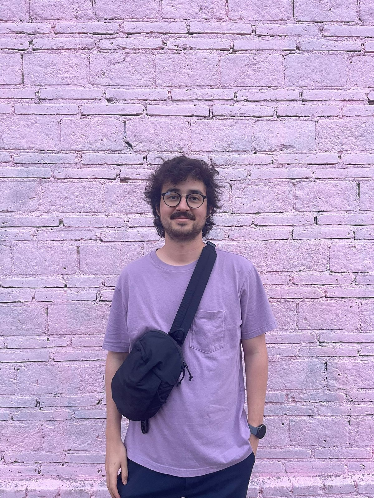

PhD Student in Politics · New York University
I am a second-year PhD student in the Department of Politics at New York University. Previously, I worked as a pre-doctoral research fellow at CAIE ITAM and Georgetown University through the UPPER Global Research Training Initiative. I hold a BA and MA in Economics from ITAM.
My research focuses on political economy, traditional and social media. I study how governments control information environments, the spread of misinformation, and the political consequences of social media.

profile.JPGPublications & Papers
Social Media and Gender-Based Violence: Evidence from 9M in Mexico
Harnessing Social Media Influencers or Using X Ads to Combat Misinformation?
Capacity Constraints, Case-load Increases and Incarceration Rates: Evidence from Prison Constructions
The Moral Revolution Will Not Be Televised, It Will Be Livestreamed: Censorship and Narrative Control in Mexico
Academic Background
Ph.D. in Politics
New York University
In progress
M.A. in Economics
ITAM — Instituto Tecnológico Autónomo de México
B.A. in Economics
ITAM — Instituto Tecnológico Autónomo de México
Get in Touch